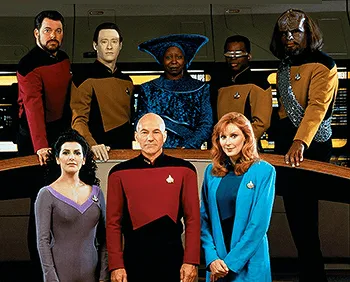

İlgi alanlarım
-
Film
- The big lebowski
- The Blues Brothers
- Nerdesin Firuze
-
Dizi
- Star Trek
- Battlestar Galactica
- The IT Crowd
-
Kitap
- Yerdeniz
- Dune
- Androidler Elektrikli Koyun Düşler Mi?
Sevgiğim Diziler
Star Trek: The Next Generation
Uzay yolu:yeni Nesil (Star Trek: The Next Generation) gene Roddenbery tarafindan yaratilmış olan kurgusal Uzay Yolu evreninde geçen bir bilimkurgu dizisidir.Türkiyede'de 1990-1997 yılları arasında Star TV'de yayınlanmışdır.